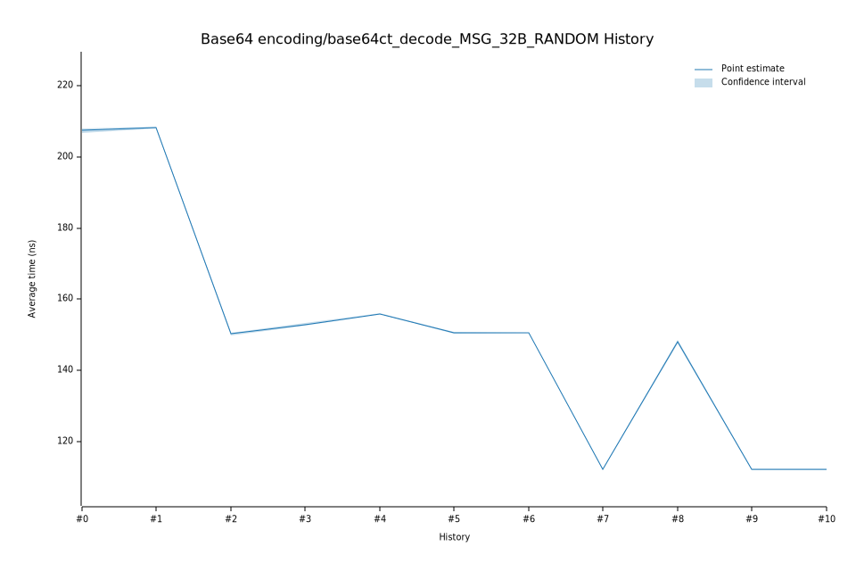

# 32023-02-08T19:27:32Z
|
Lower Bound |
Estimate |
Upper Bound |
| Value: |
152.47ns |
152.83ns |
153.20ns |
| Change in Value: |
+1.1563% |
+1.5160% |
+1.8712% |
No change in performance detected.
# 22022-12-05T09:15:03Z
|
Lower Bound |
Estimate |
Upper Bound |
| Value: |
149.82ns |
150.17ns |
150.55ns |
| Change in Value: |
-27.921% |
-27.677% |
-27.417% |
No change in performance detected.
# 12022-11-14T12:30:32Z
|
Lower Bound |
Estimate |
Upper Bound |
| Value: |
208.02ns |
208.29ns |
208.55ns |
| Change in Value: |
-0.0149% |
+0.2984% |
+0.6127% |
Change within noise threshold.
# 02022-11-04T14:07:01Z
|
Lower Bound |
Estimate |
Upper Bound |
| Value: |
206.73ns |
207.36ns |
207.93ns |